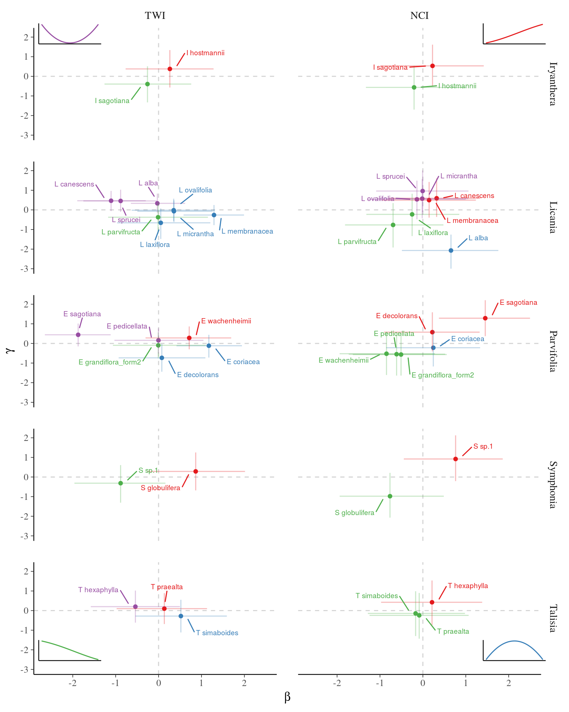

Workshop 7 - Dirichlet Multinomial
Sylvain SCHMITT
2020-10-01
Introduction
Setup
## used (Mb) gc trigger (Mb) max used (Mb)
## Ncells 461134 24.7 996864 53.3 641322 34.3
## Vcells 884173 6.8 8388608 64.0 1753819 13.4Mathematics
Single species distribution
Data
n <- 100
data <- list(
no = data.frame(Environment = seq(0, 1, length.out = 100),
Presence = c(rep(0:1, 50))),
intermediate = data.frame(Environment = seq(0, 1, length.out = n),
Presence = c(rep(0, 20),
rep(0:1,10),
rep(1,20),
rep(0:1,10),
rep(0,20))),
limit = data.frame(Environment = seq(0, 1, length.out = n),
Presence = c(rep(0,30), rep(0:1,20), rep(1,30)))
)
mdata <- lapply(data, function(x) list(N = nrow(x),
Presence = x$Presence,
Environment = x$Environment))Models
| Name | Formula |
|---|---|
| \(B_0\) | \(Presence \sim \mathcal{B}ernoulli(logit^{-1}(\alpha_0))\) |
| \(B_{\alpha}\) | \(Presence \sim \mathcal{B}ernoulli(logit^{-1}(\alpha_0+\alpha*Environment))\) |
| \(B_{\alpha, \alpha_2}\) | \(Presence \sim \mathcal{B}ernoulli(logit^{-1}(\alpha_0+\alpha*Environment+\alpha_2*Environment^2))\) |
| \(B_{\alpha, \beta}\) | \(Presence \sim \mathcal{B}ernoulli(logit^{-1}(\alpha_0+\alpha*Environment+Environment^{\beta}))\) |
| \(B_{\alpha, \beta}2\) | \(Presence \sim \mathcal{B}ernoulli(logit^{-1}(\alpha_0+\alpha*(Environment+Environment^{\beta})))\) |
| \(B_{\alpha, \beta}3\) | \(Presence \sim \mathcal{B}ernoulli(logit^{-1}(\alpha_0+Environment^{\alpha}+Environment^{\beta}))\) |
Stan code
data {
int<lower=1> N ; // # of individuals
int<lower=1> K ; // # of environmental descriptors
int<lower=0, upper=1> Y[N] ; // individuals presence or absence (0-1)
matrix[N,K] X ; // environmental descriptors
}
parameters {
real alpha ; // intercept
vector[K] beta ; // sigmoidal slope
vector[K] gamma ; // quadratic form
}
model {
alpha ~ normal(0, 10^6) ; // priors
beta ~ normal(0, 10^6) ;
gamma ~ normal(0, 10^6) ;
Y ~ bernoulli_logit(alpha + X * beta + X .* X * gamma) ;
}Predictions
load("Wk7_save/SingleModel.Rdata")
g <- lapply(names(fits), function(model){
lapply(as.list(names(data)), function(type)
cbind(type = type, data[[type]],
mu = apply(as.matrix(fits[[model]][[type]], pars = "theta"), 2, mean),
t(apply(as.matrix(fits[[model]][[type]], pars = "theta"), 2,
quantile, probs = c(0.05, 0.95))))) %>%
bind_rows() %>%
mutate(model = model)
}) %>% bind_rows() %>%
ggplot(aes(x = Environment)) +
geom_point(aes(y = Presence, col = as.factor(Presence))) +
geom_point(aes(y = mu)) +
geom_ribbon(aes(ymin = `5%`, ymax = `95%`), color = 'red', alpha = 0.2) +
geom_line(aes(y = `5%`), col = "red", alpha = 1, size = 0.5, linetype = "dashed") +
geom_line(aes(y = `95%`), col = "red", alpha = 1, size = 0.5, linetype = "dashed") +
facet_grid(model ~ type, scales = "free")Predictions
Species joint distribution
Data
n <- 100
data <- list(
no = data.frame(Environment = seq(0, 1, length.out = 100),
A = c(rep(0:1, 50)),
B = c(rep(c(1,0), 50)),
C = c(rep(c(1,0), 50))),
intermediate = data.frame(Environment = seq(0, 1, length.out = n),
A = c(rep(0, 20),
rep(0:1,10),
rep(1,20),
rep(0:1,10),
rep(0,20)),
B = c(rep(0, 5),
rep(0:1,10),
rep(1,20),
rep(0:1,10),
rep(0,35)),
C = c(rep(0, 35),
rep(0:1,10),
rep(1,20),
rep(0:1,10),
rep(0,5))),
limit = data.frame(Environment = seq(0, 1, length.out = n),
A = c(rep(0,30), rep(0:1,20), rep(1,30)),
B = c(rep(0, 20),
rep(0:1,10),
rep(1,20),
rep(0:1,10),
rep(0,20)),
C = c(rep(1,30), rep(0:1,20), rep(0,30)))
)
data <- lapply(data, function(x) x %>%
reshape2::melt(id.vars = "Environment",
variable.name = "Species", value.name = "Presence") %>%
filter(Presence != 0) %>%
dplyr::select(-Presence))
mdata <- lapply(data, function(x)
list(N = nrow(x),
S = length(unique(x$Species)),
K = 1,
X = matrix(x$Environment),
Y = sapply(levels(as.factor(x$Species)),
function(sp) as.numeric(x$Species == sp))))Model
\[Presence \sim \mathcal{Dirichlet~Multinomial}(\\softmax(\alpha + \beta*E + \gamma*E^2))\]
\[LPMF(y|\alpha) = \Gamma(\sum \alpha) + \sum(\Gamma(\alpha + y)) \\- \Gamma(\sum \alpha+\sum y) - \sum\Gamma(\alpha)\]
Stan code - data
\[Presence \sim \mathcal{Dirichlet~Multinomial}(softmax(\alpha + \beta*E + \gamma*E^2))\]
data {
int<lower = 1> N ; // # of individuals
int<lower = 1> S ; // # of species
int<lower = 1> K ; // # of environmental descriptors
int<lower = 0, upper=1> Y[N, S] ; // individuals presence or absence for each species
matrix[N,K] X ; // environmental descriptors
}Stan code - parameters
\[Presence \sim \mathcal{Dirichlet~Multinomial}(softmax(\alpha + \beta*E + \gamma*E^2))\]
parameters {
vector[S] alpha ; // intercept
matrix[S,K] beta ; // sigmoidal slope
matrix[S,K] gamma ; // quadratic form
}Stan code - model
\[Presence \sim \mathcal{Dirichlet~Multinomial}(softmax(\alpha + \beta*E + \gamma*E^2))\]
model {
alpha ~ normal(0,1) ;
for(k in 1:K){
beta[,k] ~ normal(0,1) ;
gamma[,k] ~ normal(0,1) ;
}
for (n in 1:N)
Y[n] ~ dirichlet_multinomial(softmax(alpha +
beta*to_vector(X[n,]) +
gamma*to_vector(X[n,] .* X[n,]))) ;
}Stan code - LPMF
\[LPMF(y|\alpha) = \Gamma(\sum \alpha) + \sum(\Gamma(\alpha + y)) \\- \Gamma(\sum \alpha+\sum y) - \sum\Gamma(\alpha)\]
functions {
real dirichlet_multinomial_lpmf(int[] y, vector alpha) {
real alpha_plus = sum(alpha);
return lgamma(alpha_plus) + sum(lgamma(alpha + to_vector(y)))
- lgamma(alpha_plus+sum(y)) - sum(lgamma(alpha));
}
}Stan code - Full
functions {
real dirichlet_multinomial_lpmf(int[] y, vector alpha) {
real alpha_plus = sum(alpha);
return lgamma(alpha_plus) + sum(lgamma(alpha + to_vector(y)))
- lgamma(alpha_plus+sum(y)) - sum(lgamma(alpha));
}
}
data {
int<lower = 1> N ; // # of individuals
int<lower = 1> S ; // # of species
int<lower = 1> K ; // # of environmental descriptors
int<lower = 0, upper=1> Y[N, S] ; // individuals presence or absence for each species
matrix[N,K] X ; // environmental descriptors
}
parameters {
vector[S] alpha ; // intercept
matrix[S,K] beta ; // sigmoidal slope
matrix[S,K] gamma ; // quadratic form
}
model {
alpha ~ normal(0,1) ;
for(k in 1:K){
beta[,k] ~ normal(0,1) ;
gamma[,k] ~ normal(0,1) ;
}
for (n in 1:N)
Y[n] ~ dirichlet_multinomial(softmax(alpha +
beta*to_vector(X[n,]) +
gamma*to_vector(X[n,] .* X[n,]))) ;
}Fit
Trace
Pairs
Predictions
g <- lapply(names(mdata), function(type)
lapply(1:3, function(sp)
cbind(type = type, data[[type]],
species = LETTERS[sp],
Environment = data[[type]]$Environment,
theta = apply(as.matrix(fits[[type]],
pars = paste0("theta[", 1:mdata[[type]]$N, ",", sp, "]")),
2, mean),
theta5 = apply(as.matrix(fits[[type]],
pars = paste0("theta[", 1:mdata[[type]]$N, ",", sp, "]")),
2, quantile, probs = 0.05),
theta95 = apply(as.matrix(fits[[type]],
pars = paste0("theta[", 1:mdata[[type]]$N, ",", sp, "]")),
2, quantile, probs = 0.95))) %>%
bind_rows()) %>%
bind_rows() %>%
ggplot(aes(x = Environment, col = species)) +
geom_ribbon(aes(ymin = theta5, ymax = theta95), alpha = 0.2) +
geom_line(aes(y = theta)) +
facet_wrap(~ type, nrow = 3)Predictions
Species complexes in Paracou
Topographic Wetness Index
Topographic Wetness Index.
Neighbor Crowding Index
\[NCI_i = \sum _{j|\delta_{i,j}<20m} ^{J_i} DBH_j ^2 e^{-\frac{1}{4}\delta_{i,j}}\]
Posteriors

Posteriors.
Predictions

Predictions.